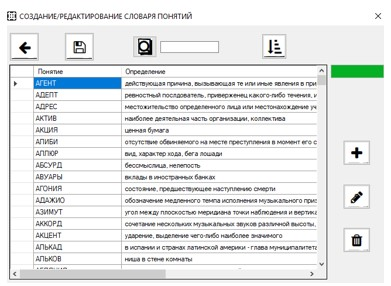

При выборе пункта меню «Создать словарь понятий» или «Редактировать словарь понятий» откроется форма,
где администратор может работать со словарем: добавлять слова, удалять слова и редактировать,
выполнять сортировку (по длине и по алфавиту).
Система должна контролировать язык записи понятий и их уникальность.
